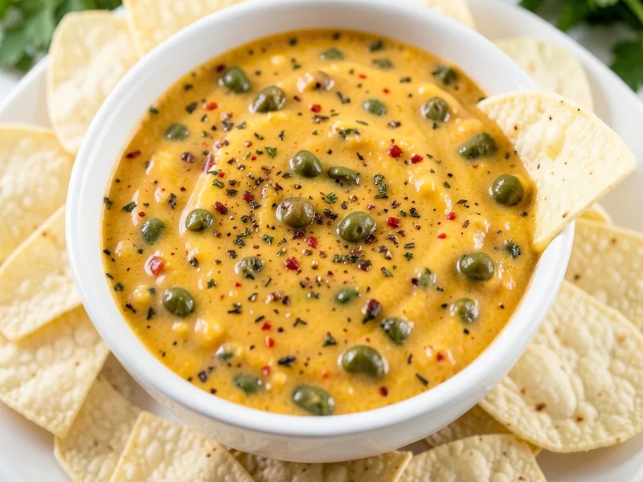

A rich, creamy cheese dip loaded with green chiles and warm spices — perfect for scooping with tortilla chips or drizzling over enchiladas.
Estimated from USDA data and standard product nutrition labels; assumes 6 servings of dip only, not including tortilla chips · Per serving (based on 6 servings)
Minimal weight loss during cooking; a small amount of moisture evaporates as the dip simmers on the stovetop. Dip only, excluding tortilla chips.
By Matthew
← All Recipes